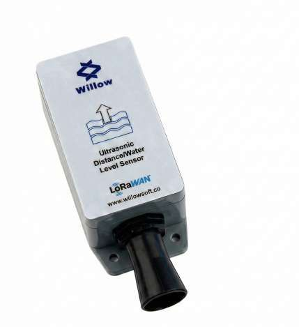
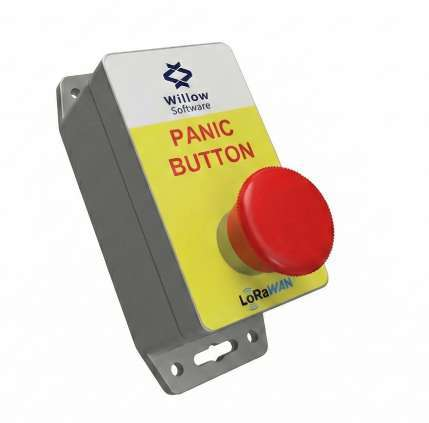
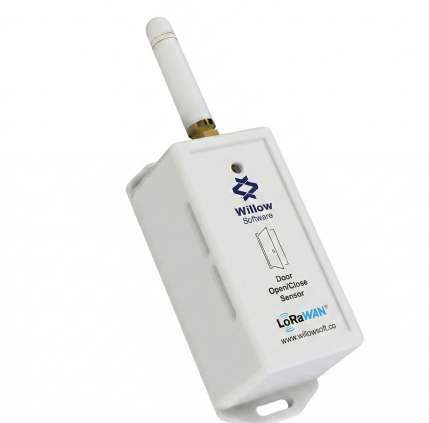
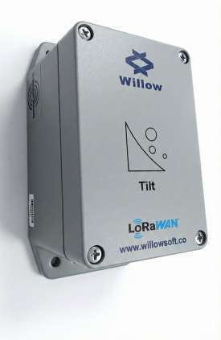
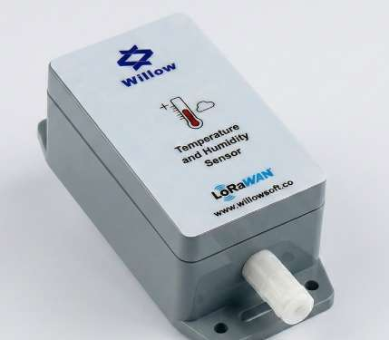
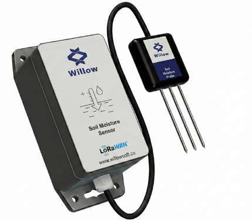
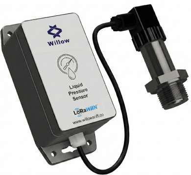
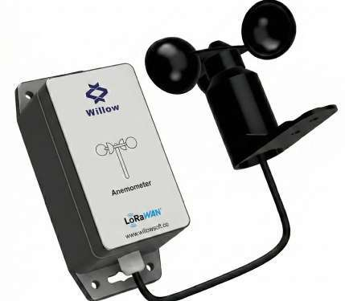

Featured Hardware
LoRaWAN modules and sensors ready for real deployments.
15 kmRange
10 yrsBattery
IP67Outdoor

Products
Modules, environmental sensors, tracking devices, safety products, and industrial interfaces for reliable remote monitoring.
Featured Hardware
A compact LoRaWAN-enabled MCU module for low-power sensor end-nodes.
Catalog


Ultrasonic distance and level sensor for tanks and manholes.


GNSS asset and vehicle tracking over LoRaWAN.

Industrial panic button for emergency response workflows.

Door open and close monitoring for facilities and cabinets.

3-axis tilt and acceleration monitoring for motion events.

Temperature and humidity sensor for indoor and outdoor sites.


Soil moisture and soil temperature monitoring for farming.

Liquid pressure sensor for pipelines and industrial tanks.

Outdoor anemometer for wind speed measurement.